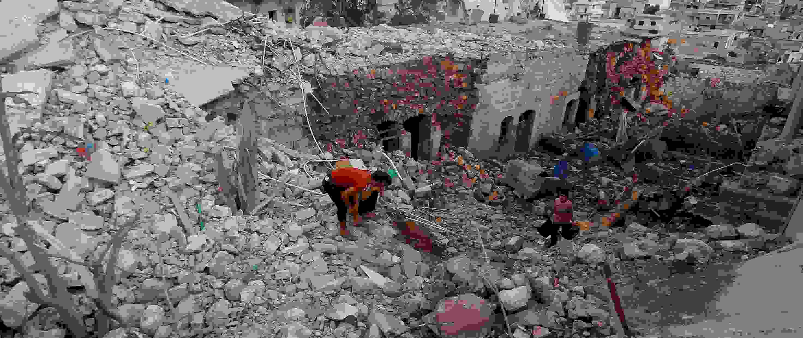
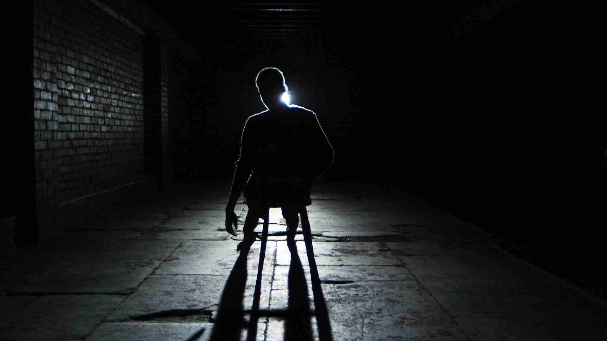
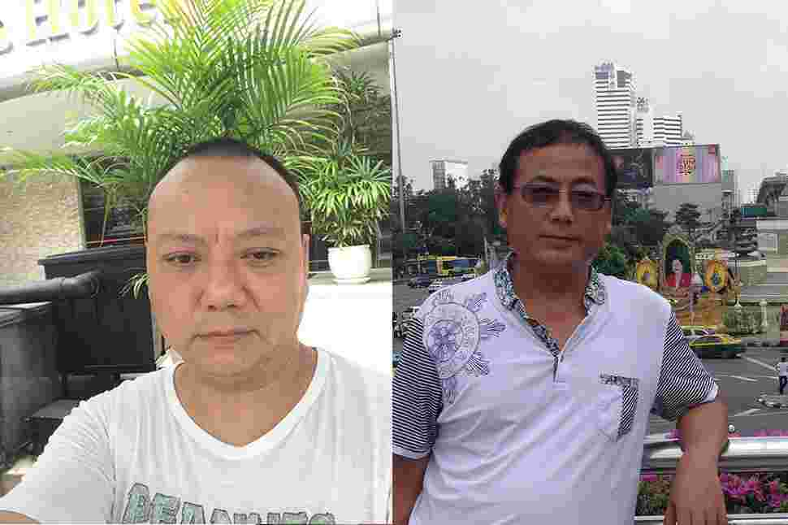

跳转到主要内容
2019年度报告
我们是谁
我们的工作
如何参与
网络联署
加入我们
人权公开课
最新消息
搜索
搜索字段
搜索
立即行动
主菜单
2019年度报告
我们是谁
我们的工作
如何参与
展开 如何参与 子列表
网络联署
加入我们
人权公开课
最新消息
立即行动
阅读国际特赦组织的文章，来了解世界各地人权问题的评论和分析
Human rights lawyer Nasrin Sotoudeh photographed in the garden of her office. Photo by Kaveh Kazemi/Getty Images)
主题
内容类别
区域/国家
上一个
下一个
707 结果
排序方式
最近
按最早优先
标题 - 提升
标题 - 降序
新闻
04/01/16
中国：七名活动人士因声援浦志强律师被刑拘
新闻
29/12/15
中国：广州三君子被判刑

新闻
23/12/15
数百名平民在俄罗斯对叙利亚的空袭中丧生
新闻
18/12/15
四名活动人士因声援浦志强被刑拘
新闻
15/12/15
中国政府提倡的“网络主权”是对网络自由的根本威胁
评论
14/12/15
中国政府对浦志强的审判是旨在让其他独立声音噤声的政治审判！
新闻
08/12/15
中国政府扫荡劳工机构，多名维权人士被关押

新闻
02/12/15
中国：政府尸检恐销毁证据
新闻
27/11/15
中国：对郭飞雄及另外两名活动人士的严厉判决是最新的政治迫害
新闻
26/11/15
中国：记者高瑜应该得到释放，而不是仍然身陷囹圄

新闻
20/11/15
中泰联手打压言论自由，无视难民权利，这种可耻勾结必须停止
新闻
16/11/15
中国活动人士遭泰国驱逐回国，很有可能遭受酷刑
上一个
1
…
55
56
57
…
59
下一个